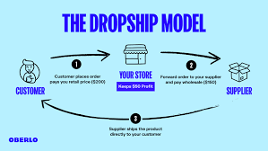

he idea of starting a business is exciting. But many ideas require time, money, and risk. Contrary to popular belief, there are actually many ways to start a business that let you focus less on the logistics and upfront costs and more on getting started. These low-investment small-business ideas make a great entry point for beginners, bootstrappers, or anyone with a busy schedule and let you pick up a side business without having to drop everything else.
Buy stock, store it, pick it, pack it, ship it. Managing inventory is a big commitment when you’re running a business. Dropshipping is an easy business to start and the first of our good business ideas. Dropshipping is a fulfillment model where a third-party supplier stores and ships inventory to customers on your behalf. It’s one of the best businesses to start because it’s low overhead, hands-off, and scalable. You don’t need to handle any products yourself—you just need to make the sales and pass orders on to your supplier. In fact, it’s one of the quickest and cheapest businesses to start. You can curate products from one or more suppliers into your own online store under a theme that focuses on a specific niche, like gear for yoga enthusiasts or water bowls for dog owners. When a customer buys a product from you, the order is sent to your supplier, who fulfills it on your behalf. However, you are still responsible for your own marketing and customer service.
